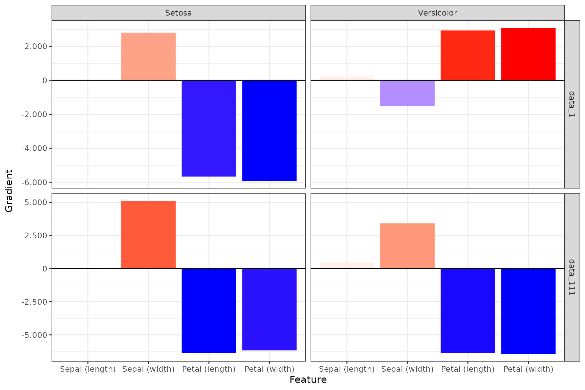
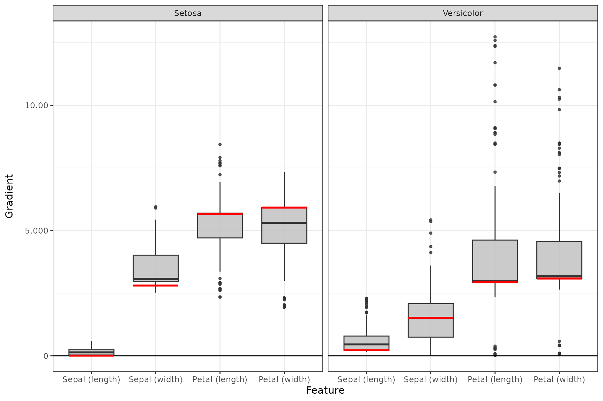

📝 Note
Since the innsight package relies on thetorchpackage for each method and this requires a successful installation of LibTorch and other dependencies (torch::install_torch()), no examples can be run in the R vignette for memory reasons. For the executed codechunks we refer to our website.
In this very simple example, we want to show you the use of the innsight package and its possibilities in the simplest case. For this, we use the Iris dataset, which contains the length and width of the sepals and petals of the three flower species Iris setosa, versicolor and virginica. In total, there are measurements of \(50\) flowers of each type in centimeters.
The first step does not necessarily need the innsight package yet, but at this point, it is listed anyway to have a fully working example. In this example, the model is created in torch and trained as well.
📝 Note
It is also possible to train the torch model using theluzpackage, which is described in the vignette with the penguin dataset (see?vignette(package='innsight')).
library(innsight)
library(torch)
# Set seeds for reproducibility
set.seed(42)
torch_manual_seed(42)
# Prepare Data
data(iris)
x <- torch_tensor(as.matrix(iris[, -5]))
# normalize input to [-1, 1]
x <- 2 * (x - x$min(1)[[1]]) / (x$max(1)[[1]] - x$min(1)[[1]]) - 1
y <- torch_tensor(as.integer(iris[, 5]))
# normalize input data
# Define Model
model <- nn_sequential(
nn_linear(4, 30),
nn_relu(),
nn_dropout(0.3),
nn_linear(30, 10),
nn_relu(),
nn_linear(10, 3),
nn_softmax(dim = 2)
)
# Train model
optimizer <- optim_adam(model$parameters, lr = 0.001)
for (t in 1:2500) {
y_pred <- torch_log(model(x))
loss <- nnf_nll_loss(y_pred, y)
if (t %% 250 == 0) {
cat("Loss: ", as.numeric(loss), "\n")
}
optimizer$zero_grad()
loss$backward()
optimizer$step()
}
#> Loss: 0.1949702
#> Loss: 0.07439215
#> Loss: 0.07707331
#> Loss: 0.04924558
#> Loss: 0.03550616
#> Loss: 0.06755874
#> Loss: 0.04763605
#> Loss: 0.04390002
#> Loss: 0.04739834
#> Loss: 0.05710813The easiest way to convert a model for the innsight package is just using the model for the Converter class without any further arguments (except for torch models the input dimension is still needed). Thus, the converting part for our trained model is done by:
Since there are no labels for the inputs and outputs in the torch model, they were generated automatically by innsight. But you can pass them by yourself using the corresponding arguments. These labels are then also used in the visualizations in step 4.
Now we can apply the implemented methods to our trained model.
Although these methods are different, they are called more or less the
same way in innsight. Essential arguments are of course
the converter object (converter) and the data
(data) to which the method is to be applied. In addition to
the essential and method-specific arguments, the following other
arguments can be set for each (local) method:
channels_first: There are, basically, two data
formats for image and signal data, having the channels at the last
position or directly after the batch axis. To be able to handle both
formats, the format of the passed data can be specified with this
argument. In this example it is unused because we have tabular
data.
output_idx: These indices specify the output nodes
(or classes) for which the method is to be applied. By default, the
result for the first ten classes is calculated for efficiency reasons.
However, if you want to examine several specific classes at once, you
must specify the corresponding indices with this argument.
ignore_last_act: Sometimes it makes more sense to
ignore the last activation function to get better results. This is
especially true for classification problems with softmax or sigmoid as
the last activation.
For more and detailed information on the arguments see this article. In the following, we apply our trained model to different methods provided in the package:
Gradient without last activation
grad_no_softmax <- Gradient$new(converter, x, ignore_last_act = TRUE)Gradient with last activation
grad_softmax <- Gradient$new(converter, x, ignore_last_act = FALSE)LRP with \(\varepsilon\)-rule (\(\varepsilon = 0.01\))
We can also set the method-specific arguments, such as the LRP rule and its associated parameter:
lrp_eps <- LRP$new(converter, x, rule_name = "epsilon", rule_param = 0.01)DeepLift with mean as reference value
x_ref <- x$mean(1, keepdim = TRUE) # ref value need the shape (1,4)
deeplift_mean <- DeepLift$new(converter, x, x_ref = x_ref)Afterwards the results can be retrieved either with the class method
method$get_result or the equivalent S3 function
get_result. With the argument type, it is also
possible to select whether the results are returned as
array, data.frame or
torch_tensor:
# get result as a data.frame with the class method
head(grad_no_softmax$get_result(type = "data.frame"), 5)
#> data model_input model_output feature output_node value input_dimension
#> 1 data_1 Input_1 Output_1 Sepal (length) Setosa 0.005748448 1
#> 2 data_2 Input_1 Output_1 Sepal (length) Setosa -0.117953710 1
#> 3 data_3 Input_1 Output_1 Sepal (length) Setosa 0.005748448 1
#> 4 data_4 Input_1 Output_1 Sepal (length) Setosa -0.117953710 1
#> 5 data_5 Input_1 Output_1 Sepal (length) Setosa 0.005748448 1
# get result as array (default) with the generic S3 function
str(get_result(grad_no_softmax))
#> num [1:150, 1:4, 1:3] 0.00575 -0.11795 0.00575 -0.11795 0.00575 ...
#> - attr(*, "dimnames")=List of 3
#> ..$ : NULL
#> ..$ : chr [1:4] "Sepal (length)" "Sepal (width)" "Petal (length)" "Petal (width)"
#> ..$ : chr [1:3] "Setosa" "Versicolor" "Virginica"The package innsight provides two ways to visualize
the results of a method, namely as innsight_ggplot2 or
innsight_plotly object. Both are S4 classes to combine
multiple plots nicely and to be able to make visual modifications or
adjustments to the selection of plots even after the object has been
created. The first class is based on ggplot2 and
behaves partly like an ordinary ggplot2 object. Whereas
the other one is based on the plotly package and
creates an interactive graph with more detailed information about each
variable. For more information on the S4 classes
innsight_ggplot and innsight_plotly see the in-depth
vignette or the respective R documentation
(?innsight_ggplot2 or ?innsight_plotly).
For each of these classes and thus of course also for each method,
there are two plot functions, plot shows only individual
data points and boxplot visualizes summaries of multiple
data points using summary statistics.
The function plot is implemented for each of the
available methods. You can select your desired data points and output
nodes/classes with the data_idx and output_idx
arguments, respectively. To switch between a ggplot2
and
**plotly** based plot, you can use the logicalas_plotly`
parameter, but this requires a successful installation of this
package.
📝 Note
Of course, only results of output nodes/classes to which the method has been applied can be plotted, i.e. the indices in theoutput_idxargument must be a subset of the argument with the same name when calling the method in Step 2.
ggplot2-based plot
Despite being an object of the class innsight_ggplot2,
it can be treated like a normal ggplot2 object,
i.e. geoms, scales and themes can be added and modified.
# Show data point 1 and 111 for output node 1 (Setosa) and 2 (Versicolor)
plot(grad_no_softmax, data_idx = c(1, 111), output_idx = c(1, 2)) +
ggplot2::theme_bw()
plotly-based plot
The S3 function boxplot is implemented for each of the
available local methods. You can select your desired data points
(default is 'all') and output nodes/classes with the
data_idx and output_idx arguments,
respectively. To switch between a ggplot2 and
plotly based plot, you can use the logical
as_plotly parameter, but this requires a successful
installation of this package. In addition, you can use
ref_data_idx to select a single data point that will be
visualized in red as a reference value, and preprocess_FUN
to select a function that will be applied to all data in advance
(e.g. the absolute value).
📝 Note
Of course, only results of output nodes/classes to which the method has been applied can be plotted, i.e. the indices in theoutput_idxargument must be subset of the argument with the same name when calling the method in Step 2.
ggplot2-based plot
Despite being an object of the class innsight_ggplot2,
it can be treated like a normal ggplot2 object,
i.e. geoms, scales and themes can be added and modified.
# Summarized results for output node 1 (Setosa) and 2 (Versicolor) and
# reference value 3
boxplot(grad_no_softmax, output_idx = c(1, 2), ref_data_idx = 3, preprocess_FUN = abs) +
ggplot2::theme_bw()
plotly-based plot